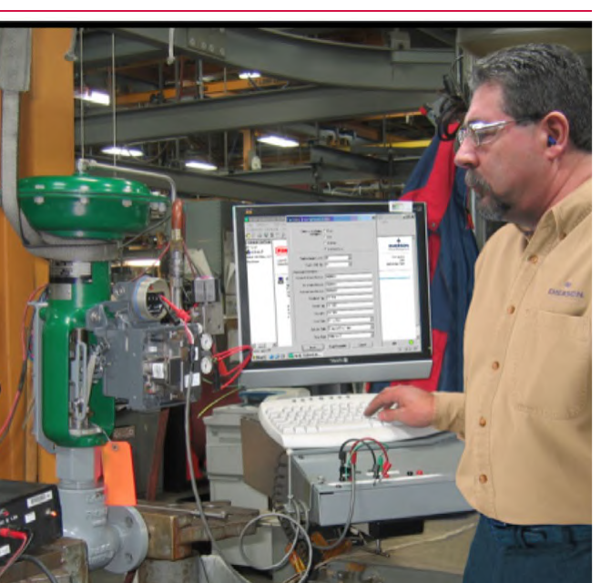

How a Signature Series Test Builds the Baseline

- 1The assembled valve, actuator, and FIELDVUE digital valve controller run through a factory Signature Series test in ValveLink
- 2ValveLink records the valve's own travel-vs-pressure friction/force signature
- 3That recorded signature becomes the baseline a later, in-service test of the same valve gets compared against
After Control Valve Handbook, 6th ed., Fig. 2.8 — used directly. Component Index: cvh-cmp-signature-series-testing-photo.